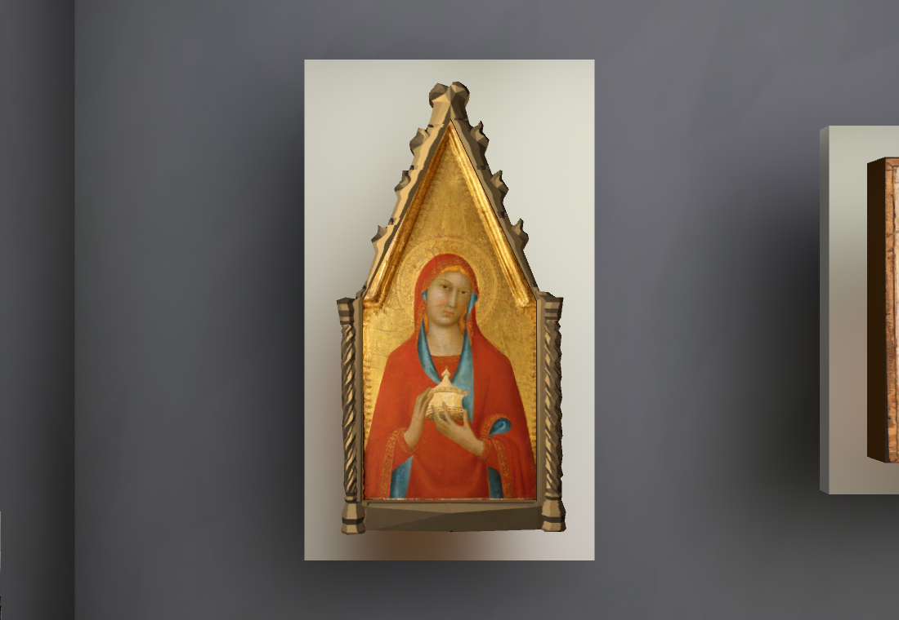
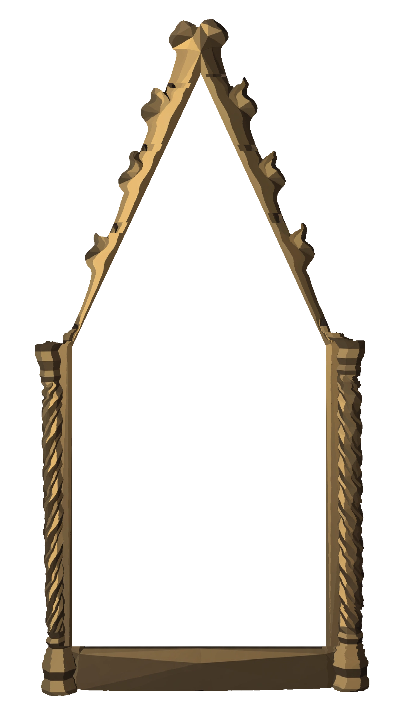
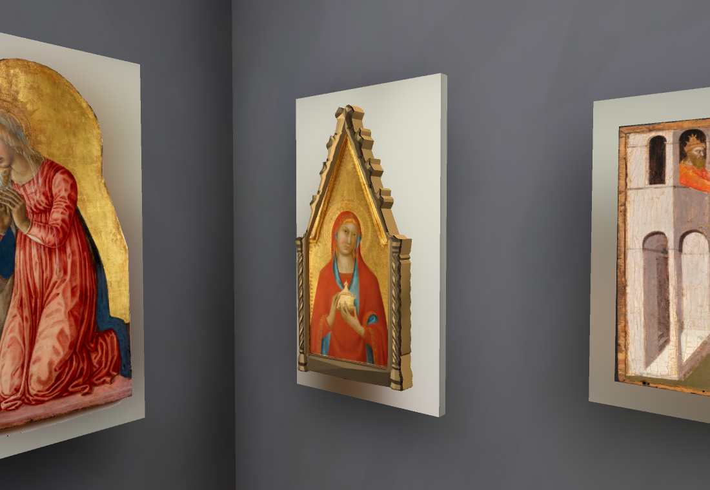
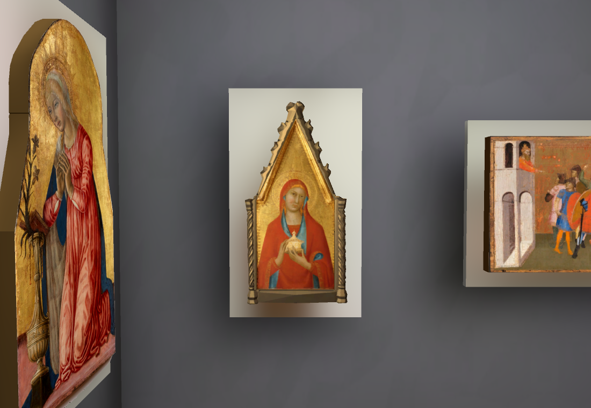
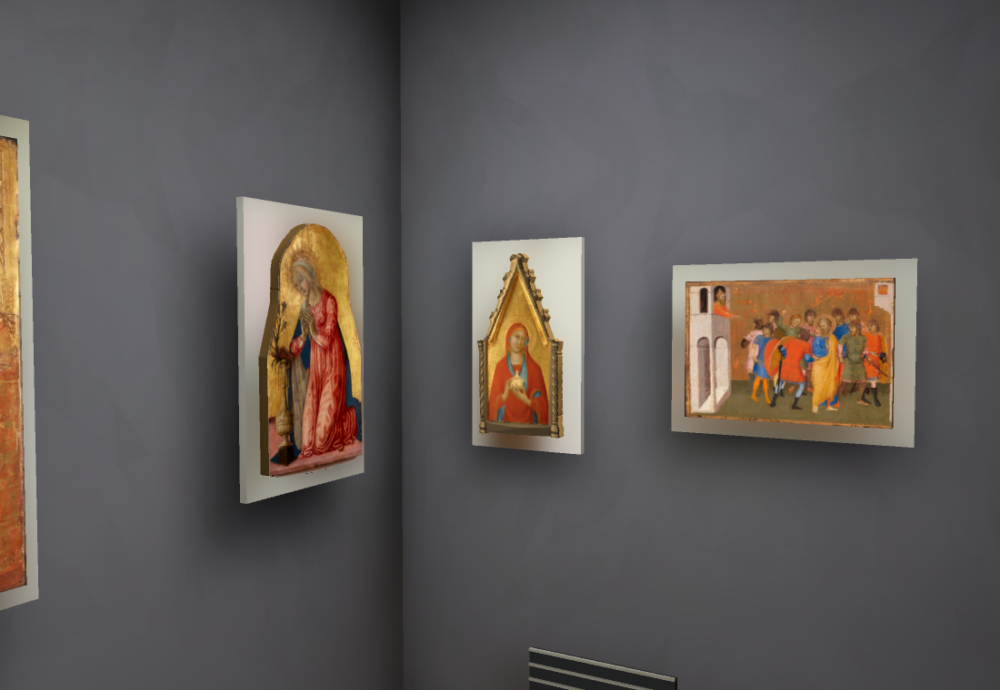
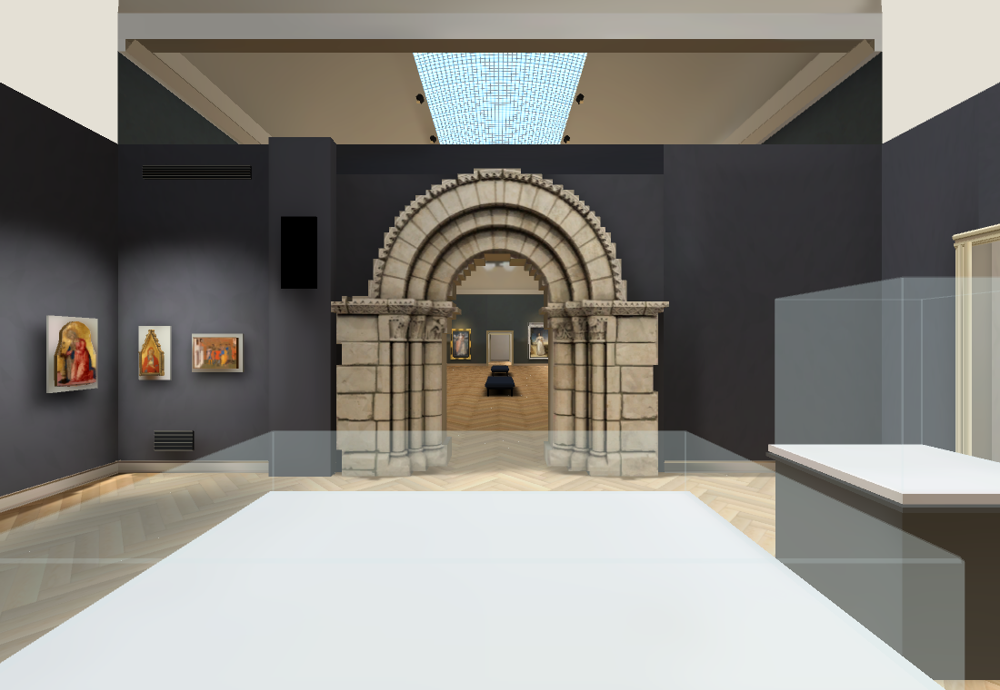
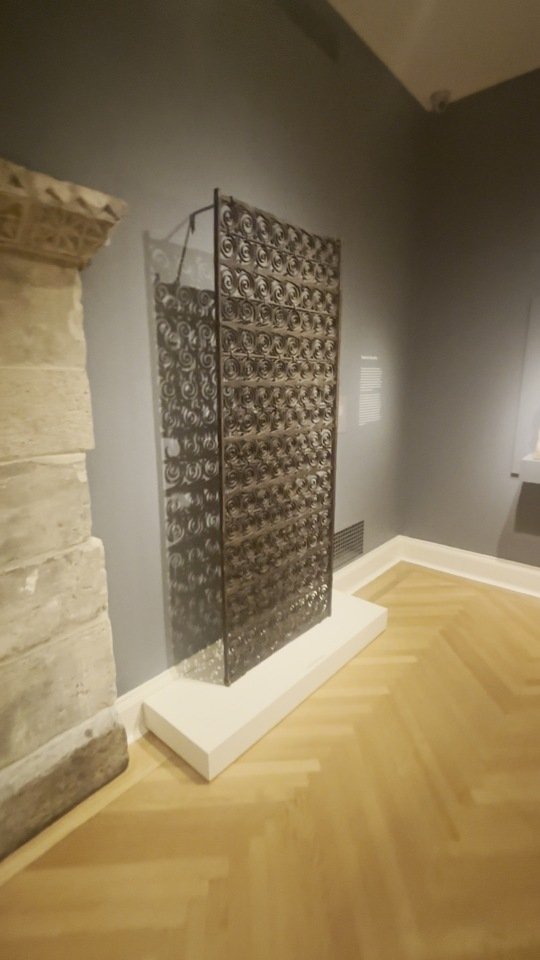
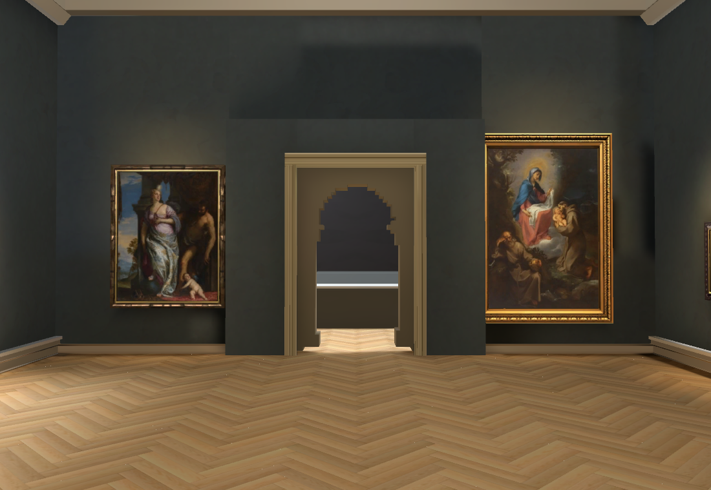

Collection · source-shaped medieval frame
Walk the current connected rooms · Previous source comparisons and rejected generation
WASD to walk; Space resets; 2 opens the European gallery view,3 the French gallery. Mary Magdalene21.250 is now installed between the curved Virgin panel and Saint Peter, following their source wall grouping. The corrected Muse gold is fitted to the museum photograph rather than leaving the wider generated opening.
 Original video detail: Lippo Memmi Mary Magdalene21.250.
Original video detail: Lippo Memmi Mary Magdalene21.250.
Current native baked close view. Original painting stays separate from the fitted Muse carved frame. Depth and exact mounting position remain provisional. Unchanged corrected Muse output from the previous pass. Its opening needed proportion fitting.
Unchanged corrected Muse output from the previous pass. Its opening needed proportion fitting.
Source-shaped texture derivative: outer outline and painted opening follow the museum photograph; native gold bands fitted to those shapes.
Closed native ring:117 outline vertices,488 triangles and732 edges checked for paired opposite winding.3.5cm depth is inferred; uniform rear/sides and carved relief still need source validation.
Separate authentic painted panel sits1cm behind the front lip. Original crop pixels verified equal; dimensions provisionally treated as painted-panel size. Source wide: Virgin on west wall; Magdalene and Saint Peter on north wall.
Source wide: Virgin on west wall; Magdalene and Saint Peter on north wall.
Current wall grouping with all four newly built medieval paintings. Spacing is source-guided; room metres, heights, supports and exact offsets are not accepted.Architecture still needing correction
The source has a flat off-white medieval ceiling. The prototype omitted opaque room ceilings for its elevated walking camera; at eye height this can expose the unrelated Main Hall skylight. That is an identified geometry defect, not source acceptance. The next correction will add the evidenced ceilings and verify eye-level/top-down visibility.
 Reciprocal video wide: flat ceiling, tracks, iron grille to the portal right, stone fragment by stair door, low case.
Reciprocal video wide: flat ceiling, tracks, iron grille to the portal right, stone fragment by stair door, low case.
Current portal wall: grille/stone fragment/ceiling remain unfinished. Display cases, room heights and portal reverse also need refinement.
Tall repeated spiral ironwork, projecting white plinth and rear diagonal brace. Official API candidates checked so far do not match.
Existing Main Hall connection and23 original paintings retained; palette and portal reverse remain under review.Current RTX4070SUPER Chrome154/154 navigation/camera checks plus keyboard round trip,errors[],p9530.10ms,ready5794ms locally.799 baked surfaces; final CPU Vulkan bake390.81s. Native close/oblique/wide views inspected. Owning Shell repeat46/50,4 failures retained; first44/50 had two additional animation timing failures. Repository checks pass.60fps target remains unmet/unverified; no new native performance claim.
No new paid generation this pass. Total$0.74 actual/$0.75 conservative. Heartbeat disabled; sole main worker. Full reconstruction remains unfinished: accurate rooms/placements/lighting, remaining gallery objects and case contents, stairs, auditorium and modern gallery.
Closed mesh checks · Source profile and uncertainty · Architecture findings · Browser checks